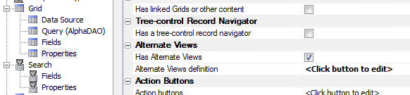
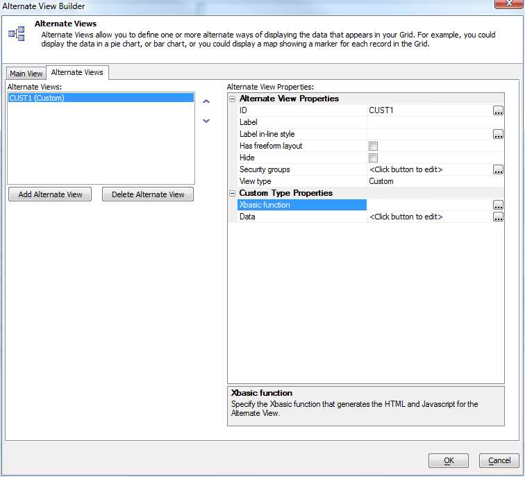
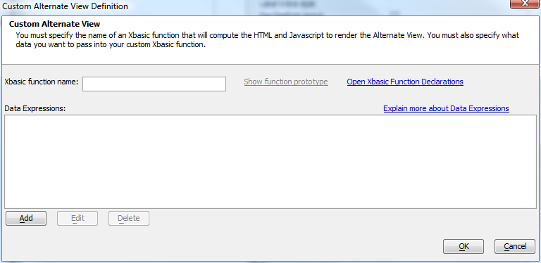
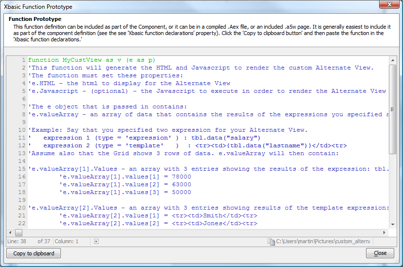
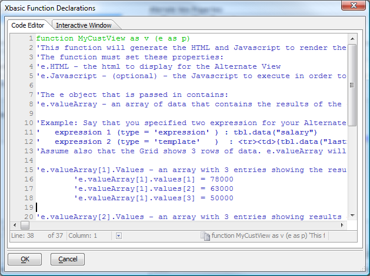
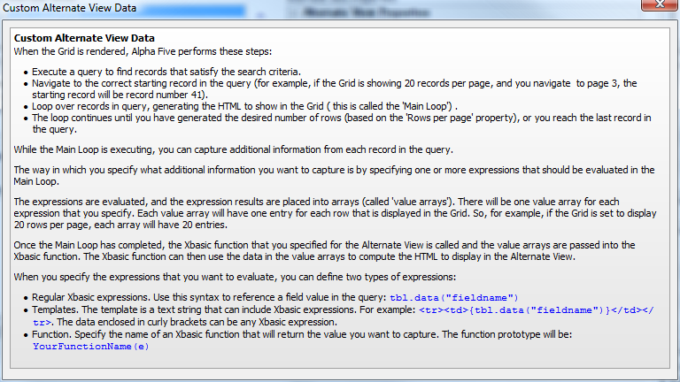
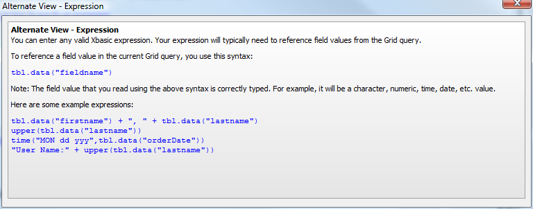
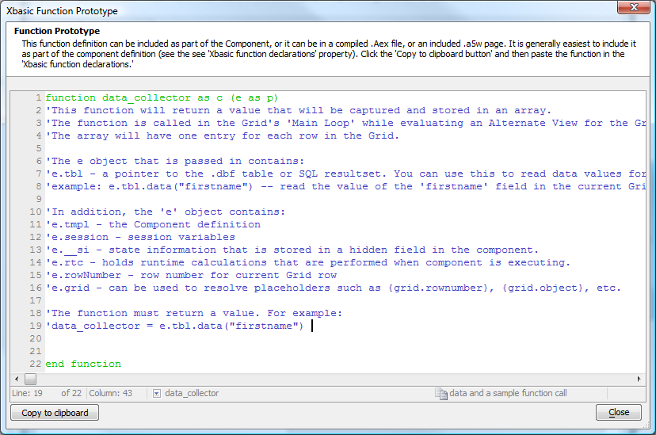

Custom Alternate View
The custom alternate Grid view allows you create expressions that will be processed from the data in the grid display and an Xbasic function to turn the arrays of expression values into an actual view. This is the infrastructure that allowed Alpha Software to turn a Google Map Component into a Google Map alternate view.Before you define an alternate view, you need to know what you're defining. Once you've got your goal in mind, you can list the data you'll need to collect, and figure out how you'll process the data to display the alternate view. In many cases, you will want to use a predefined widget that has a JavaScript API, and you will generate the HTML to house the JavaScript widget as well as the JavaScript to add the collected data to the widget .
The first step in defining the alternate view to Alpha Five is to check Has Alternate View in the grid properties.

In the Alternate View Builder, add an alternate view and select Custom for your alternate view type.

The alternate view definition is a combination of one or more data expressions for collecting the data and an Xbasic function for processing the collected data.

Once you type in the name of the Xbasic function you want to use, the "Show function protype" link will be enabled. Click on that link and Alpha Five will generate a commented prototype function for you. It is worthwhile reading the prototype function carefully so that you can understand the flow of data in the alternate view.

Click on the "Copy to clipboard" button, close the function prototype, click on "Open Xbasic Function Declarations", and paste your function. Then you can edit your Xbasic function to generate the required HTML and JavaScript for your view. It's a good idea to create sample data and a sample function call that you can use to test your function. When your function is working properly, you can comment out the sample data and sample function call.

You'll also have to create one or more data expressions. The help screen shown below explains what is necessary. You can create data expressions, templates that include data expressions in curly brackets, and/or Xbasic functions to process the data for each row.

Alternate view expressions are written in Xbasic. Data from the row is referenced with the syntax
tbl.data("fieldname")
as discussed in the help screen below.

If you decide to create one or more Xbasic functions to process row data, you can generate function prototypes for them, as shown below.
